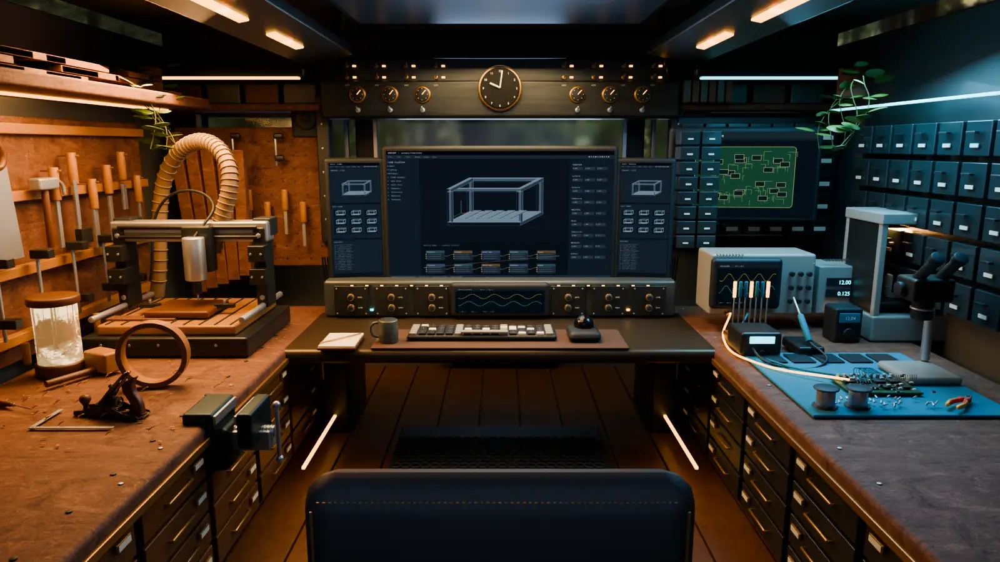

HEY, I’M JOEY.
Pull up a stool.
There’s always something in the works.
Software engineer. Tinkerer. Usually making something. This is my workshop, flattened into 2D so it loads in a blink. Pick a station to look around.

THE INDEX
Everything on the benches.
 Start hereSoftware
Start hereSoftwareAVARON
Body-aware training intelligence for athletes and teams.
 Start hereSoftware
Start hereSoftwareAmazon Business Compare
Product/deal processing, restrictions checks and dashboard workflows.
 Start hereSoftware
Start hereSoftwareLeadsByMail
Geospatial house visualization and direct-mail production tooling.
 Start hereSoftware
Start hereSoftwareHiregrove
Job discovery, matching, resume preparation and application review.
 Start hereSoftware
Start hereSoftwareCockfights Online
Third-person bird fighting game with movement, combat and online modes.
 Software
SoftwareReelForge + AVARON reels
Turn trend formats into original scripts, briefs and staged video edits.
 Software
SoftwareAVARON canvas video toolkit
Code-drawn animated shorts, character staging, browser playback and export.
 Software
SoftwareHuePrint
Scanned blueprints toward interactive 3D residential models.
 Software
SoftwareUmiViz
Embeddable 3D wheel-rim viewer with finish selection.
 Software
SoftwareZommieBiz
Discover businesses, assess existing websites and generate website previews.
 Software
SoftwareAirbnb Defuzz
Match listing signals to candidate public property records.
 Software
SoftwareNavier–Stokes numerical lab
Explore model equations, fluid simulation and dual-geometry diagnostics.
 Software
SoftwareEarlier SPAITR desktop collection app
Collect BLE sensor sessions and annotate/extract lacrosse shots.
 Software
SoftwareGoogle Maps Business Copier
Copy visible business listing fields from a Maps panel.
 Software
SoftwareCS-770 graphics assignments
Graphics exercises with camera and lighting source.
 Woodshop
WoodshopWedding lithophane lamp
A personalized wedding gift combining photographic panels, wood and light.
 Woodshop
WoodshopThe wedding welcome sign
One of my most diverse builds: a wedding welcome sign that brought CNC design, laser cutting, staining, tiny glue-ups and mounting together.
 Woodshop
WoodshopGeometric wooden mirror
A geometric mirror combining wood and reflective material.
 Woodshop
WoodshopObjects for gatherings
Cutting boards, custom cornhole boards, giant stacking game and mountain-shaped table numbers.
 Woodshop
WoodshopCNC, shop and vehicle builds
CNC/engraving work, workshop furniture/storage and vehicle interiors.
 Electronics
ElectronicsAVARON R2 sensor prototype
Revived motion-recording sensor hardware, alongside the earlier lacrosse hardware work.
 Electronics
ElectronicsNeuroCode / early sensor experiments
IMU logging, Bluetooth transmission and button experiments.
 Electronics
ElectronicsElectronics learning bench
Practice basic digital input/output with PlatformIO.
Peek in the Recycle Bin — six older experiments that didn’t make the benches.